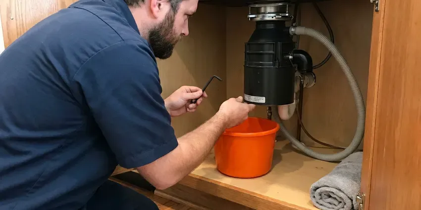

Insinkerator Installation in Aberdeen, SD
A straight disposal swap is about an hour of work for our Aberdeen, SD plumbers, flange to test run.
- Water Tested Before We Leave
- Dishwasher Knockout Handled
- Licensed, Insured Plumbers
- Next-Day Disposal Swaps

Get a quieter InSinkErator installed this week in Aberdeen, SD.
Mounting hardware, cord kits and drain fittings ride on every truck.
InSinkErator Installation in Aberdeen, SD
HWR Plumbing handles the full InSinkErator setup: quick-lock mount, cord kit or hardwire, dishwasher knockout and discharge tube. Nothing gets left for you to finish. We test with running water, a small grind load and a dishwasher drain cycle, then check every joint before we pack up.
Our expertise includes:
- Badger, Evolution and Pro series models from 1/3 to 1 HP
- Discharge tube lined up with the trap
- Hardwired, plug-in and air switch setups

Additional Kitchen Plumbing Services in Aberdeen, SD
Our kitchen plumbing services in Aberdeen, SD cover sinks, disposals, dishwashers, and grease traps so your kitchen keeps running without backups or leaks.



Garbage Disposal Repair in Aberdeen


Customers
Why Choose HWR Plumbing for Insinkerator Installation in Aberdeen, SD?
We explain the model differences up front so you are not paying for horsepower you will never use. Then we install it and test it. The test is running water, a handful of scraps and a full dishwasher drain cycle while we watch every joint with a flashlight.
- Clean Mounting, Every sink flange gets fresh plumber's putty or a gasket so the bowl never seeps.
- Local Know-How, Our plumbers know the kitchen layouts common in Aberdeen, SD homes, old and new.
- Code Compliance, Every unit goes in to current South Dakota plumbing and electrical code, with a grounded circuit and a proper drain.
Citywide Coverage
Stainless or composite, single bowl or farmhouse, our trucks carry the mounting hardware for the sinks found across Aberdeen. For composite, we use a gasket in place of putty. Some composite and stone sinks stain from putty, so we follow the sink maker's notes and use the included gasket when needed.
Experienced Team
Every plumber on our crew is licensed and trained on disposals before running calls alone. They learn on actual jobs. A new hire rides with a senior plumber for months, and disposal swaps are one of the first jobs they take over because the steps are repeatable and easy to check.
Safety-First Approach
We confirm the disposal circuit is grounded before the unit is connected. Older kitchens often lack a ground. If the outlet or junction box has no ground path, we stop and arrange the fix, because a disposal sits in a wet cabinet right under a metal sink and a fault there is dangerous.
Trusted Certified Aberdeen Plumbing Services Professionals
At HWR Plumbing, we are proud to offer certified plumbing services throughout Aberdeen, SD. Credentials matter in this trade. Every repair, install and maintenance visit follows strict safety and quality rules, and the plumbers doing the work carry recognized industry credentials.
Call Us Now PHCC Plumbing Contractor Recognition
PHCC Plumbing Contractor Recognition Better Business Bureau (BBB) Accreditation
Better Business Bureau (BBB) Accreditation Angi Certified Pro
Angi Certified Pro ISO 9001 Quality Management Certification
ISO 9001 Quality Management CertificationInSinkErator Disposal Installs Done Right in Aberdeen, SD
Septic-Friendly Disposal Installs in Aberdeen, SD
Homes on septic can run a disposal, but food solids add load to the tank. Deep frost and heavy clay can limit how well a drain field works, so regular pumping and keeping vehicles off the field matter. InSinkErator's Septic Assist feeds an enzyme solution into the chamber during each run to start breaking down waste before the tank. The enzyme cartridge gets mounted, and we show you the refill. Scraping plates into the trash still helps.

Commercial Disposer Installation in Aberdeen, SD
Restaurant disposals are a different class of machine. Commercial units run 1 to 5 HP, usually on a dedicated circuit, and many need a water solenoid and a control panel mounted on the wall. We mount the unit and plumb the water feed, and your electrician handles the circuit. Expect an inspector to check it. Local code may also limit where a disposer can discharge relative to the grease interceptor, so we confirm that before the job starts.
Evolution Series Installation in Aberdeen
Evolution units grind in two or three stages and carry extra sound insulation around the motor housing, which is why they sit taller and weigh more than a Badger. Cabinet clearance matters. Before install day we measure the drop from sink to trap arm so the unit fits. The Compact fits tight cabinets, and the Excel needs the most room.
Air Switch Disposal Installation in Aberdeen
An air switch puts a push button on the countertop or sink deck instead of a wall switch. Pressing it sends air down a tube. A control box under the sink reads that pulse and flips the power, keeping live wiring well away from the water. If there is a spare faucet hole, we use it, otherwise we drill.
Disposal Replacement and Haul-Away in Aberdeen, SD
Old disposals are heavy and awkward to get rid of. They leave on our truck. The old cord, any replaced mount ring and the rusty slip nuts go too, so you are not stuck with a bag of parts on trash day. Most replacements finish in one visit.
Disposal Installs for New Sinks in Aberdeen, SD
A new sink changes the drain math. Deeper undermount or farmhouse bowls are common in remodels. A deeper bowl pushes the disposal lower, and if the trap arm in the wall was set for a shallow sink, the discharge can end up below it, so we sometimes lower the wall stub. We plan that during the remodel, not after.
Evolution Upgrade Installs in Aberdeen, SD
Quiet is the main thing people notice after an Evolution install. The SoundSeal insulation cuts motor noise. What they notice later is fewer clogs downstream, because the multi-stage grind breaks fibrous scraps into much smaller pieces before they reach the trap and the branch line. With the motor running, we check the mount for vibration.

Batch Feed vs Continuous Feed in Aberdeen
Continuous feed is the type most kitchens have. Flip the switch and it runs until you flip it off. Batch feed only runs with its stopper turned in place, so nobody can reach into a running unit, which some families with small kids prefer and which needs no wall switch at all. We wire each one to match.
InSinkErator Installation Near Me in Aberdeen, SD
Need an InSinkErator installed fast? Our local plumbers can be at your door the same day in most cases. Popular Badger and Evolution models are in stock, which means most homes skip the special order and the second appointment entirely. Pro series units sometimes need a day.
Technicians on our crew live and work in the area. They know the common kitchen layouts here. Big-box store installs often come from a subcontractor who has never seen your house, while our plumbers carry the right drain fittings and can rework a trap the same visit if the new unit needs it. It saves a second visit.
HWR Plumbing at a Glance
- Fully licensed plumbing team covering Aberdeen, SD
- Same-day appointments and 24/7 emergency response
- Clear written estimates, no hidden fees
- 4.8-star rated by 304+ South Dakota customers
Aberdeen Map
Aberdeen Information
- Population
- 28,110
- Area codes
- Local
- Service area
- Aberdeen and towns within a 40 mile drive
- Nearby
- Watertown, Huron, Brookings, Pierre
Older drain lines take a beating from ground food waste, so the trap arm and pipe slope get checked before the unit goes up. Basements are common in South Dakota homes, which puts water heaters, softeners and main drains below grade where sump pumps often play a role.
Talk to a Plumber
Call HWR Plumbing for honest, reliable plumbing from people who know the trade in Aberdeen, SD.
Our Specialized Plumbing Services in Aberdeen, SD
At HWR Plumbing, you get every kind of plumbing service from one company across Aberdeen, SD. We go from leak detection all the way to full system installations, for homes and commercial buildings, and we do it quickly at a fair price. Here are the core services we offer:


How Our InSinkErator Installation Visit Goes in Aberdeen, SD
Our process in Aberdeen, SD keeps the kitchen clean and the visit short.
Request a Quote
Call (605) 480-9736 to describe your setup and get a no-obligation quote. We ask about the cabinet size and the current unit.
On-Site Check
The plumber looks at the trap arm and the power supply in your Aberdeen kitchen. A model that will not fit gets flagged before anything comes apart.
Installation and Test
We mount the unit, make the electrical and drain connections and test it under running water. We wipe each joint dry and watch for weeps.
Frequently Asked Questions About Insinkerator Installation in Aberdeen
Most installs in Aberdeen, SD come to $200 to $600 with labor and basic materials. You buy the unit on top of that. Residential InSinkErator units run roughly $100 to $400 depending on horsepower and grind stages, and we write the quote with the unit and the labor on separate lines so you can compare.
Plan on a morning. A typical swap takes one to two hours. Jobs with new wiring or a drain that needs reworking can stretch to about three hours, and the plumber will tell you the timing once the old unit is off and the drain is visible.
Yes, same day in most cases. With the disposal dead, the sink backs up quickly. On a morning call we can usually have a plumber there that afternoon with a replacement unit on the truck, so the kitchen is back in use by dinner most days.
Our workmanship warranty covers the install itself, meaning the flange seal and every connection we make. InSinkErator warranties the unit separately. Coverage from the maker runs about two to ten years by model, and we write down both so you know who handles what.
Humming without grinding, leaks from the bottom of the unit, frequent reset trips and rusty water are all signs of failure. So does age. Once a unit passes ten years, replacement usually beats repairing a worn motor.
Every residential model InSinkErator currently sells, plus commercial units. Badger and Evolution units are usually on the truck. Pro series and commercial disposers sometimes need a day to order, and we confirm the model number with you by phone so the right one is waiting when the plumber shows up.
Badgers are single-stage grinders with lighter motors. For normal scraps they work well. Evolution units grind in two or three stages, have more insulation and more torque, and handle fibrous food like celery and corn husks that can stall a Badger and trip its overload.
A hum with no grinding is the classic one. So is water dripping from the housing. Constant jams or a reset that trips every few days usually mean a unit near the end of its life.
What People Are Saying About Our Plumbing Experts?

James P.
Our restaurant had a slow leak at the hand sink that was rotting the cabinet base. HWR Plumbing came in at six in the morning before prep, replaced the trap and both supply lines, and was packed up before my first cook clocked in.
Commercial Plumbing · Madison, SD
Jessica T.
We were adding a gas range in a kitchen remodel and needed a new line run from the meter. The plumber pulled the permit, ran the pipe through the crawl space, and had it inspected and approved within the week.
Gas Line Repair · Brookings, SD
Karen W.
After our third pinhole leak in copper, we stopped patching. HWR Plumbing gave us a written plan room by room and repiped the house in PEX while we stayed in it. The crew covered our floors every morning and cleaned up every night.
Repiping · Watertown, SD
Paul B.
Our pit pump ran nonstop even in dry weather. The plumber found the check valve was stuck open, so the same water kept cycling back into the pit. New valve, new float switch, done in an hour. It runs quiet now.
Sump Pump · Mitchell, SDKevin O.
Before buying our house I paid for a sewer camera inspection. HWR Plumbing found a belly in the line that held standing water about forty feet from the cleanout. We used the video to get the sellers to fix it before closing.
Sewer Camera Inspection · Mitchell, SDGreg S.
I manage a small strip center with six tenants. HWR Plumbing handles our annual backflow testing and fixed a recurring clog in the shared sewer line that had been backing into the nail salon. Their reports come in clean and on time.
Commercial Plumbing · Aberdeen, SD